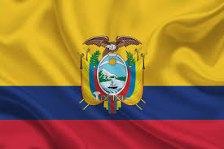

O país integrou o Império Inca e foi colônia da Espanha. Em 1822 passou a integrar o território independente da Grão-Colômbia, do qual se separou em 1830. A história da República do Equador é marcada por grande instabilidade política, golpes pelo poder e mudanças na Constituição do país.
O futebol é o desporto mais popular e praticado no Equador, tal como na maioria dos países da América do Sul. Outros desportos populares no Equador incluem o beisebol, basquetebol, voleibol, ténis e atletismo.
As frituras estão muito presentes na culinária equatoriana. E isso se faz mais presente ainda em relação aos frutos do mar. É comum até mesmo que sejam fritos peixes inteiros, como é o caso deste prato, feito com corvina, onde ela é frita inteira e acompanhada com molho vermelho de camarão no final.
A principal língua falada no país é o espanhol (94% da população). Entre os idiomas oficiais em comunidades nativas estão o quíchua, o shuar e onze outros idiomas.
Divide-se em clima equatorial úmido, que mantém volumes elevados de chuva durante todo ano, e clima equatorial semiúmido, que apresenta uma curta estação seca.
A religião predominante no Equador é o cristianismo, com 97,5% da população a praticá-lo. Dentro do cristianismo, a religião mais praticada é o catolicismo romano, com 92% da população a ser católica. Outras religiões praticadas no Equador incluem o protestantismo (11,30%), as Testemunhas de Jeová (1,29%) e outras religiões, como o judaísmo, o budismo e o mormonismo (6,97%).